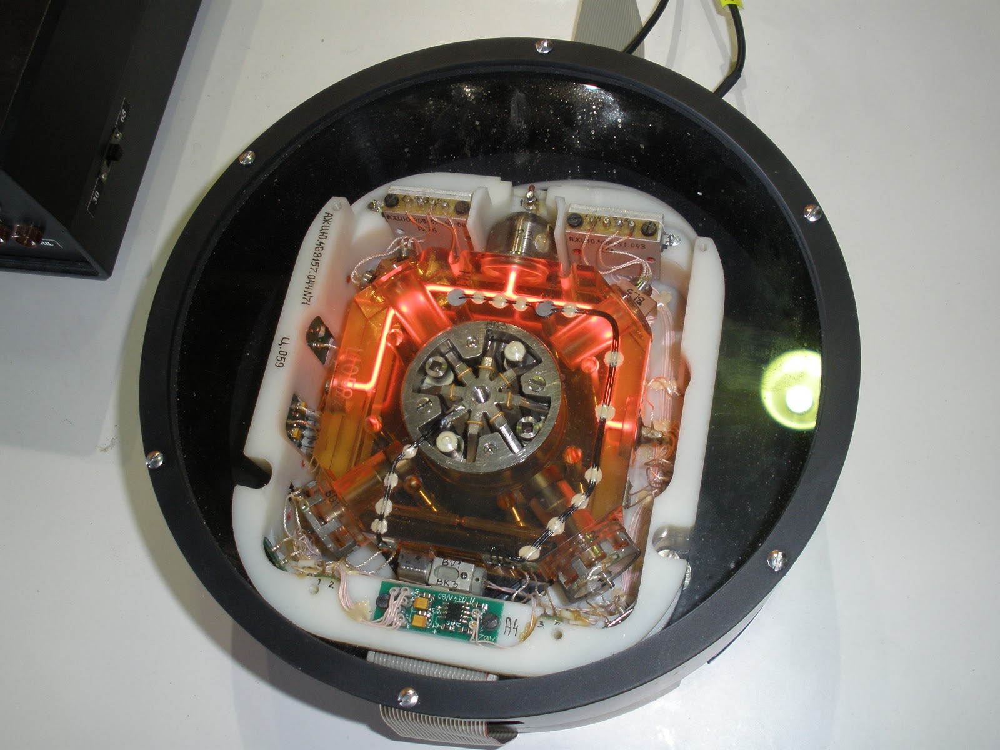
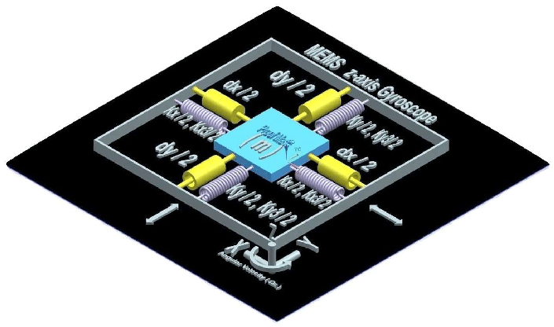
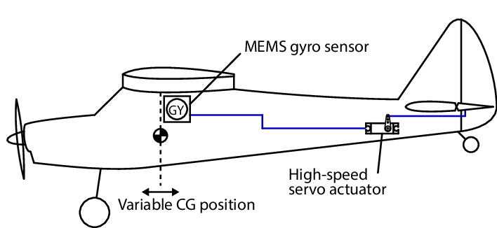
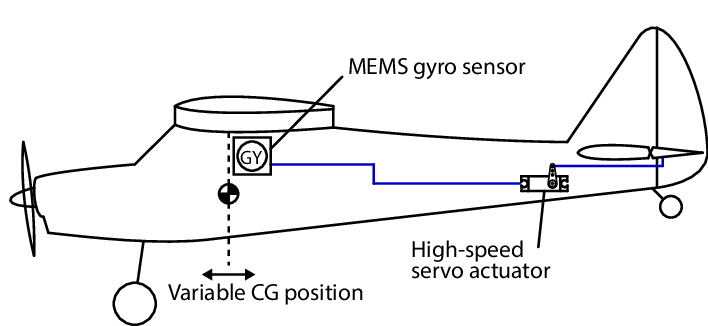

Benefits of Fibre Optic Gyroscopes
A fiber optic gyroscope detects changes in position or direction by using the Sagnac effect. In this way, an optical gyro functions similarly to a mechanical gyro. By using light that passes through an optical fibre coil that operates the optical gyro.
Inside a typical optical gyroscope, a spooled-up optical fiber transports pulses of laser light. Some pulses move clockwise and others go counterclockwise. The gyro measures rotation by detecting small changes in how these pulses arrive at a sensor.
 Image of a Fibre Optic Gyroscope
Image of a Fibre Optic Gyroscope
A FOG is a pure solid-state device without any problems with leakage or wearing-out mechanisms. The telecommunications industry has proven the lifetime of optical fibers to be several decades, and even active components such as the light laser diode are in the 20-year range.
Since there is no dithering mechanism in the FOG, it is a completely silent device. When in high stress situations such as dogfighting, this characteristic, although not important for many applications, can be critical.
Benefits of Ring Laser Gyroscopes
The RLS uses the Sagnac effect to detect its orientation, similar to the FOG. Phase changes will be experienced by a split beam of light traveling the same route in opposite directions. As the RLG rotates clockwise, the beam moving clockwise effectively travels a slightly longer route and slows down its reception by the detector. The beam moves counterclockwise against the rotation, effectively increasing its velocity relative to the other laser, shortening the path.
 Image of a Ring Laser GyroscopeBy measuring the phase changes while the device is rotating, angular velocity can be ascertained. In inertial navigation systems, RLGs are used in military aircraft, commercial airliners, ships & spacecraft, It has high performance, It provides high accuracy, better than0.01 ° / hour bias uncertainty, MTBF (mean time between failures) greater than 60k hours, There are no mechanical or moving parts to create friction, so there is no drift.
Benefits of MEMS Gyroscope
Also known as the Micro-Electromechanical System or MEMS gyroscope, the MEMS-based gyroscope uses MEMS technology. To detect orientation changes, it has a small vibrating mechanism. MEMS is significantly smaller in shape than other gyroscopes, can be integrated into a single, cost-effective digital interface package, has less power, has a significantly lower cost than fibre optic gyroscopes (FOG) or ring laser gyroscopes (RLG) and can therefore be used in mass-market consumer products.
 Schematic of a MEMS gyroscope
MEMS gyroscope is extremely small and light in weight, the resolution of the gyroscope sensor is largely dependent on the rate of rotor spin, it is much greater than other force or tilt sensors, Gyroscope compass shows true north as opposed to magnetic north, so unlike magnetic compass, they are preferred sensors for high-precision navigation systems.
 
Location of the MEMS gyroscope on the aircraft

Location of the MEMS gyroscope on the aircraft
The Attitude and Heading Reference System MEMS gyroscope gives a 3-dimensional orientation by integrating the gyroscope with the accelerometer data and magnetometer data. With sensor fusion, drift from gyroscope integration is compensated by reference vectors, namely the gravity and magnetic field of the Earth.
This results in a virtually drift-free orientation, making an AHRS (Altitude and Heading Reference System) a highly cost-effective solution compared to conventional high-grade IMUs (Inertial Measurement Units), which only integrate gyroscopes and must rely on the gyroscope's very high bias stability.
Most manufacturers of EFIS systems use MEMS gyroscope for their altitude and heading reference system.

Click this for the next section: Challenges of using gyroscopes in the flight instrumentation and avionics systems